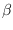
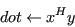
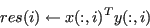
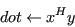
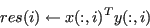

Next: psb_gedot Dot
Up: Computational routines
Previous: Computational routines
Contents
This subroutine is an interface to the computational kernel for
dense matrix sum:

call psb_geaxpby(alpha, x, beta, y, desc_a, info)
Table 1:
Data types
 , , ,  , , ,  |
Subroutine |
| Short Precision Real |
psb_geaxpby |
| Long Precision Real |
psb_geaxpby |
| Short Precision Complex |
psb_geaxpby |
| Long Precision Complex |
psb_geaxpby |
|
- Type:
- Synchronous.
- On Entry
-
- alpha
- the scalar .
Scope: global
Type: required
Intent: in.
Specified as: a number of the data type indicated in Table 1.
- x
- the local portion of global dense matrix
.
Scope: local
Type: required
Intent: in.
Specified as: a rank one or two array
containing numbers of type
specified in Table 1. The rank of must be the same of .
- beta
- the scalar .
Scope: global
Type: required
Intent: in.
Specified as: a number of the data type indicated in Table 1.
- y
- the local portion of the global dense matrix
.
Scope: local
Type: required
Intent: inout.
Specified as: a rank one or two array containing numbers of the type
indicated in Table 1. The rank of must be the same of .
- desc_a
- contains data structures for communications.
Scope: local
Type: required
Intent: in.
Specified as: a structured data of type descdatapsb_desc_type.
- On Return
-
- y
- the local portion of result submatrix .
Scope: local
Type: required
Intent: inout.
Specified as: a rank one or two array containing numbers of the type
indicated in Table 1.
- info
- Error code.
Scope: local
Type: required
Intent: out.
An integer value; 0 means no error has been detected.
Next: psb_gedot Dot
Up: Computational routines
Previous: Computational routines
Contents